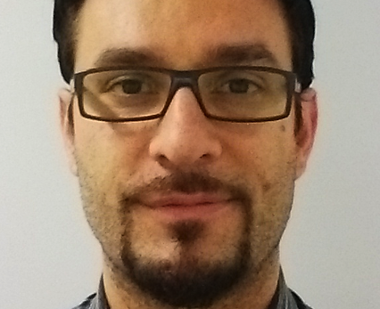
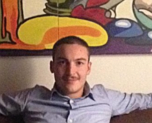
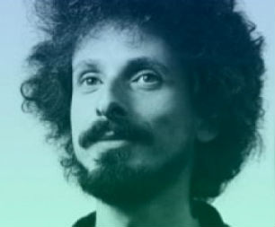
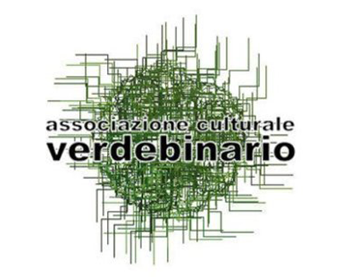

METRO OLOGRAFIX COMPIE 20 ANNI
L’associazione culturale telematica Metro Olografix compie 20 anni!
Nata a Pescara nel 1994, il 6 e 7 dicembre 2014 festeggia con un evento di promozione culturale completamente gratuito per diffondere cultura hacker, parlare di diritti in rete e programmare il futuro!
PROTAGONISTI DEL MO20
- All
- BACK TO THE FUTURE | HISTORY
- CODING THE MEMORY
- BACK TO THE FUTURE | PARTY
- BACK TO THE FUTURE | RIGHTS
- CODING THE MONEY
- BACK TO THE FUTURE | HACKING
- CODING THE MATTER
-
Lucia “Kundera” Zappacosta
Presidente di Metro Olografix organizza grandi eventi culturali e creativi che sfruttano le nuove tecnologie. A partire dal 1998 si occupa di temi alle evoluzioni nel web. -
Deborah Natalie Wahl
Avvocato iscritta all’Albo di Roma, svolge attività di consulenza e assistenza legale giudiziale e stragiudiziale in materia immobiliare, in diritto di famiglia e in materie civili e commerciali. -
Andrea Monti
Avvocato, si occupa di diritto delle telecomunicazioni e delle tecnologie dell’informazione. volge regolarmente attività accademica. Fra i suoi clienti annovera operatori telefonici, internet provider gruppi bancari e assicurazioni -
Arturo Di Corinto
Specializzato in psicologia della percezione e della persuasione all’Università di Stanford a Palo Alto, negli anni 1990 è sysop di una delle prime BBS italiane, Avana BBS, è attivista per i diritti digitali. -
Marco Blasioli
Presidente di Digital Borgo esperto di eCommerce e nuovi mercati digitali, lavora da anni nel campo delle nuove tecnologie -
Nicola “DjBatman” Battista
Entità multipla, celata dietro professioni differenti, liminali e affini ma continue e legate, in modo costante, ai fili della musica. Socio Metro dal 1995 i suoi strumenti sono computer, cassette, radio a onde corte e altri materiali atipici. -
Stefano “NeURo” Chiccarelli
Esperto di sicurezza informatica SysOp di una delle prime BBS italiane, fonda nel1994 l'associazione culturale Metro Olografix, tuttora in piena attività. Attualmente è CEO di Quantum Leap s.r.l. -
Francesco “sugo” Politi
Francesco Politi, in arte "sugo". Classe '78, ex presidente della Metro Olografix, lavora come sysadmin nell'AS21034. Laureato in Scienze della Comunicazione con una tesi sulla privacy e censura in Rete. -
 Antonio “S4tan” Parata
Ingegnere informatico si divide tra programmazione e software security. Fa parte del capitolo italiano di OWASP e di CSA. Appassionato di programmazione funzionale ha scritto diversi tool di analisi di sicurezza web. -
 Francesco “Ascii” Ongaro
Hacker ed esperto di sicurezza con centinaia di attività per molti dei clienti più importanti nel settore privato, pubblico infrastrutture, finanza, bancario, assicurativo e comunicazione. -
Massimiliano “sgrakkyu” Oldani
È un ricercatore in materia di sicurezza informatica. Lavora presso Immunity Inc. dove si occupa principalmente della sicurezza del kernel dei sistemi operativi. -
Francesco “RageMan” Perna
È un imprenditore e ricercatore Italiano in materia di sicurezza informatica. Lavora presso Quantum Leap s.r.l. dove ricopre il ruolo di CSO e conduce ricerca in ambito di sicurezza dei protocolli e delle applicazioni. -
HoRoBi
Attivo dai primi anni '90 è sempre stato sensibile al rapporto computer/djset. Uno dei primi a testare il digitale in console è una figura storica delle notti alternative/indie/rock pescaresi. -
Globster
Tony Lioci, aka Globster, è un DJ le cui composizioni si rivelano nei generi dell’ambient, della field recording e in più aspetti della registrazione e manipolazione di suoni. -
Aural Smog
Gli Aural Smog nascono dall’unione di conoscenze, di ricerca ed esperienze di musica elettronica, post-rock, kraut-rock, arte, tecnologia, fantascienza. -
Lilia
L'influenza più forte di “44”, secondo ep di Lilia, è la doppia accezione del verbo inglese to play: un disco appartenente a un genere musicale che Lilia stessa ha battezzato “Elf-tronica”. -
 Jaromil
Artista, hacker e attivista da sempre ispirato all'etica dell'open source e del codice libero -
Gabriele “Asbesto” Zaverio
Naviga le reti dal 1983, è fondatore del Freaknet, di Radio Cybernet, la prima webradio italiana e del Poetry Hacklab. Dirige il MUSIF, Museo dell'Informatica Funzionante, da lui stesso fondato 18 anni fa. -
Massimiliano “Max Negro” Masserelli
Collabora alla raccolta di informazioni e notizie, digitalizzazione dei materiali che l'associazione Tilt raccoglie e offre al pubblico per farli giocare gratuitamente. -
Emiliano Russo
Il fulcro dell’attività di VerdeBinario è la realizzazione del progetto: Museo Interattivo di Archeologia Informatica. -
Lorenzo “Lopoc” Cococcia
Security Specialist presso uno dei più grandi gruppi industriali italiani, è un convinto "illuminista" e ritiene l'hacking sia più scienza e tecnica che parole. Da sempre interessato ai risvolti sociali e politici delle nuove tecnologie. -
Fab Lab Abruzzo
L'incubatore di idee presto in arrivo a Pescara, aperto a makers e creativi di ogni campo, pronto a realizzare i loro progetti all'insegna dell'innovazione e condivisione. -
Fab Lab L’Aquila
È il laboratorio di L’Aquila inserito nella rete globale di laboratori modellati sui principi del “MIT Fab Lab”, che consentono l’innovazione fornendo l’accesso a strumenti di fabbricazione digitale. -

Valerio “ftp21” Mancini
Classe '88, si appassiona al mondo fatto i numeri binari fin da piccolo. Appassionato di dati nell'etere fin dalle prime macchinine telecomandate. Presidente del PescaraLUG e socio della Metro Olografix. -
Raffaele Mauro
Si occupa di venture capital ed è appassionato di tecnologia, finanza e geopolitica. E Innovation Manager presso la divisione Corporate & Investment Banking del gruppo Intesa. -
Guido “Flandero” Dassori
Irriducibile sostenitore delle tecnologie aperte, incontra per la prima volta Bitcoin al MOCA 2012, ma non gli presta troppa attenzione. Un anno dopo è tutto ricerca e sviluppo sulla Blockchain.
PRESENTI NELL’HACKSPACE
-
Keep in bus
L'App per chi viaggia con i giusti mezzi! Tutti gli orari degli autobus nella tua tasca: la tua guida urbana in tempo reale. -
Digital Borgo
Un team di professionisti del web con esperienza consolidata e forte motivazione che offre servizi, consulenza e formazione a 360° in uno spazio di co-working in cui condividere idee -

Dyne.org
Dyne.org esiste dal 2000 come una fondazione impegnata nella ricerca e sviluppo di software e di servizi libero e open source. -
eFuture
Siamo una giovane azienda digitale nata per strutturare e veicolare la passione per l'informatica dei suoi soci e collaboratori. -
MUSIF
Il Museo dell’Informatica Funzionante da 10 anni gode della fiducia dell’UNESCO e della Free Software Foundation, ha l'obbiettivo di fare usare computer storici e far conoscere le basi dell’elettronica. -
TILT
TILT nasce come area Fidonet nel 1992. Nel 1994 diventa associazione culturale. Nel 2012 ottiene finalmente la possibilità di offrire al pubblico alcuni pezzi della collezione, giocabili gratuitamente. -
 Verde Binario
Il fulcro dell’attività di VerdeBinario è la realizzazione del progetto: Museo Interattivo di Archeologia Informatica, volto al recupero, ripristino e riuso del materiale hardware, elettrico ed elettronico obsoleto, dismesso e da rottamare. -
ArtGuru
ArtGuru is a museum guide, reinvented, that you can install in your smartphone. Follow us to discover more! -
Open BioMedical Initiative
L'Open BioMedical Initiative è un'organizzazione no-profit e community online aperta a tutti, impegnata nello sviluppo e distribuzione di tecnologie biomedicali open source low cost e stampabili in 3D. -
Fab Lab Abruzzo
L'incubatore di idee presto in arrivo a Pescara, aperto a makers e creativi di ogni campo, pronto a realizzare i loro progetti all'insegna dell'innovazione e condivisione. -
Fab Lab L’Aquila
È il laboratorio di L’Aquila inserito nella rete globale di laboratori modellati sui principi del “MIT Fab Lab”, che consentono l’innovazione fornendo l’accesso a strumenti di fabbricazione digitale. -
PescaraLUG
Nata nel 2003, il PescaraLUG ha come unico obiettivo PROMUOVERE GNU/LINUX E IL SOFTWARE LIBERO A TUTTI.
WE LOVE
Diritti in rete
Metro Olografix è un'associazione culturale telematica di individui liberi che utilizzano lo strumento telematico per esaltare i loro interessi personali e le loro diversità.
Hacking
L'associazione si propone come un contenitore aperto nel quale chiunque può proporre e realizzare ciò che più gli sta a cuore, in piena libertà e con la sicurezza dell'appoggio e dell'aiuto degli altri soci.
Security & Privacy
Lo scopo dell'associazione è quello di divulgare una "cultura della telematica" che non sia quella proposta dalle logiche di mercato, ma che sia il più fedele possibile a quella originaria dei pionieri delle BBS.
Open Source & Free Software
Metro Olografix è una comunità virtuale fondata sulla libera circolazione delle informazioni, sul concetto di villaggio globale, su di una decisionalità democratica.